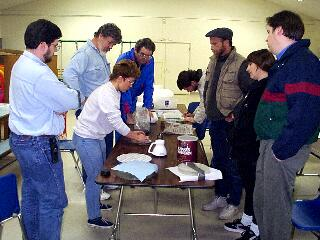

SJAA
Ephemeris
|
SJAA Ephemeris |
"The Weekly Grind" In Progress at Houge ParkMorris Jones |
|  |
Ed Erbeck says he likes to grind telescope mirrors with a check. Some of us like to try the more laborious methods.
Jane Houston has been the SJAA pied piper of mirror grinding this year, and several intrepid club members are trying their hand at manufacturing their very own telescope mirror.
Jane is an accomplished mirror maker herself, schooled by John Dobson and now his teaching assistant at the California Academy of Sciences for the past several years. Her homemade 10" Dobsonian "Stardust" was featured in the PBS production The Astronomers in 1991.
Assisting Jane is Dwight Elvey from Santa Cruz, who brings his valuable experience and Foucault test rig to each session. Tom Whittemore from Ohlone College's Astronomy Department is also joining the merry crew at the Houge Park class to help out.
Among the students is ten-year-old Mimi Wagner, who is making great progress on a six-inch mirror. Mimi's dad Mark is not one to be left out; he's working on a ten-incher of his own.
In the words of Jay Freeman, we're all having fun "turning Pyrex back into sand."
| Morris Jones; last updated: February 05, 2002 | Prev Next |